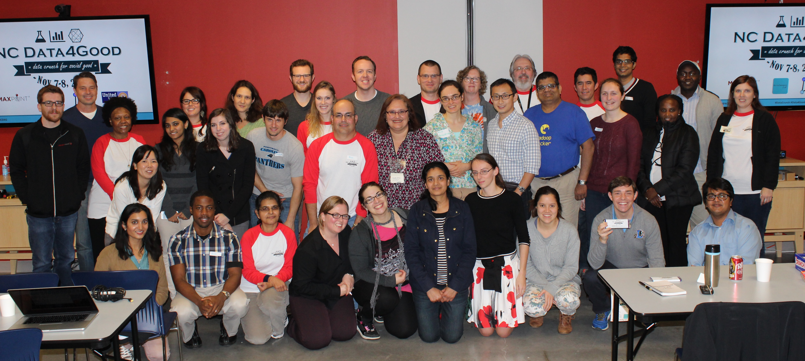
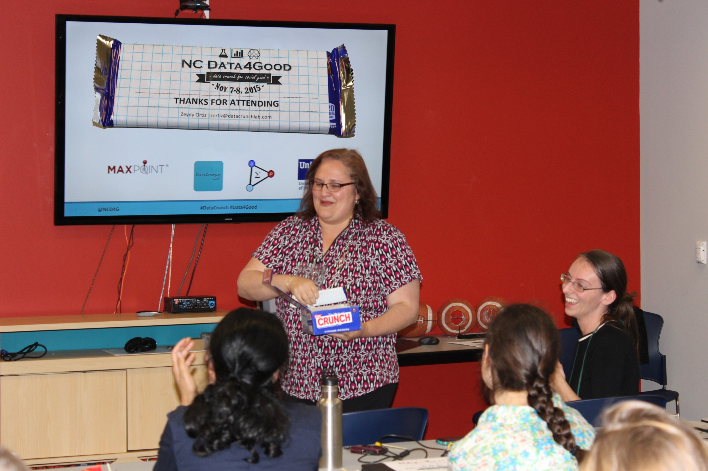

There are occasions where the power of a pertinent statistic can be felt very intensely throughout the audience and further motivates people to make an impact. We have been fortune enough to host such an event. On the weekend of Nov 7-8, 2015, our sponsor MaxPoint opened its doors to more than 40 data science practitioners who joined forces to analyze childhood hunger in and around the Research Triangle in NC, an area mostly known for biotechnology, health informatics and, lately, analytics and generally perceived as more affluent. This “Data Crunch for Social Good” had started as a small discussion amongst a few data scientists and IT professionals who decided to volunteer their analysis skills to help the community.
Day 1
The stage was set by Dr. Zeydy Ortiz from DataCrunch Lab, who has done a tremendous amount of work with our partner organization, United Way of the Greater Triangle, to boil down their “2016 100K(ids) Hungry No More Social Innovation Challenge” to 6 questions in 2 problem areas:
- CHILDHOOD HUNGER
- Where are the children in need?
- How far away are the programs to serve them?
- How are children affected?
- ACCESS TO FRESH, NUTRITIOUS FOODS
- Where are the people in need?
- Where are providers of fresh, nutritious foods?
- How far are providers from public transportation?
Now back to the statistics. The summer feeding program for children up to the age of 18 in NC was established in 1968, and has never exceeded more than a 20% participation rate. This piece of information from Dr. Maureen Berner, a government and policy researcher from UNC-Chapel Hill, showed the struggles that even well-established programs have. She took the stage to describe the hidden food sector – all the volunteer work that is done in the background to get food to people in need – and the human, physical, professional, and supply capacity challenges it is facing. In addition, not reaching all eligible children is an enormous economic opportunity lost for local businesses, jobs and food producers.
John-Paul Smith and Krista Ragan from United Way of the Greater Triangle filled in our volunteers on their upcoming “2016 100K(ids) Hungry No More Social Innovation Challenge”, a competition in the Durham, Johnston, Orange, and Wake County communities that aims to reduce childhood hunger in the Triangle. The outcome of this weekend’s Data Crunch will enable a levelled playing field for the participants of the 2016 social innovation challenge by informing them of the current state of the highlighted problem areas and drawing attention to specific issues.
A few core volunteers had spent weeks collecting data sets around childhood hunger and food availability from various open sources. Lucia Gjeltema from Research Triangle Analysts gave an overview of these data sets to spur ideas on how to combine them. MaxPoint provided Wi-Fi access for the participants who could download the data from ncdata4good.github.io.
During an intense brainstorming session one could clearly see our participants’ strong background and analytical thought process. We grouped the proposals and focused on the ones that were reasonable within our timeframe and data.
Instead of taking a lunch break some teams went straight to “work”. Throughout the rest of the day, filled with collaboration, classification, correction, iteration… one could hear a needle drop at times where groups were immersed into their analysis, interrupted by occasional cheers and claps when an analysis or a plot turned out as insightful and informative as expected. The organizers were eagerly awaiting the presentations of the groups’ findings the next day.

Day 2
Early birds arrived to continue their analysis and were greeted with breakfast and coffee by Alice Broadhead, a product analyst at MaxPoint who had been in our Data4Good movement from the beginning. Her manager, Mark Lowe, senior director of product analytics, was equally excited (but not surprised) to see so many people spend their weekend at MaxPoint using their data science skills to help solve critical, local challenges. He stressed that “the MaxPoint team is passionate about using data to solve hard problems. We are honored to be able to apply this passion in support of United Way’s effort to find innovative solutions to alleviate childhood hunger around the Triangle.” How can a pro bono data science project start any better than with your boss backing you up?
Melinda Thielbar from Research Triangle Analysts shared her experience in presenting outcomes to technical and non-technical people alike. She stressed the fact that viewers might only remember one or two takeaways and that it is up to the presenter to determine and communicate the most memorable ones. One of her most memorable comments was to think about which result or chart would be the one that should be tweeted by the audience.
Another statistic followed us from day 1 to day 2. Children eligible for free and reduced price lunches represent 56% of NC public school population, or 851,370 children. There is an astonishing amount of poverty in our region and many people are not aware of this.
Our diverse teams set out to investigate an array of questions to enable social innovators to challenge the status quo through United Way’s upcoming social innovation challenge. Several additional people were quietly gathering supplementary data, supporting the teams in their tasks and taking care of the smooth flow on both days.
Eight groups presented their findings:
- Data - Where we are and where we need to go
Mark Hutchinson
The first presentation looked at the state of the data that is available and how to make it useful. Data on farms and the food chain logistics in general was sparse and needs future work. Geocoding locations based on their address was a main task - solved by this volunteer who set up a paid account to do so automatically. He identified several additional datasets that will be used for additional analysis. A few longer-term collaboration ideas from the previous day’s brainstorming sessions were discussed in further detail and he will reach out to potential collaborators and data partners.
-
Bus accessibility of food pantries
Alice Broadhead, Monika Sanghi, Rex Dwyer, Kip Sutter, Clara Sutter
One team looked at the reachability of food pantries by bus. This fosters understanding of which food pantries would have to rely on either the immediate neighborhood or people’s ability to drive there if they have a car or have someone to drive them. The fact that a visit to the food pantry routinely takes 2-3 hour of waiting in line makes getting there in time and returning a big part of the picture. Johnston County, for example, offers rides for handicapped and elderly people but does not have a public transportation system.
-
Measuring the distance people in need travel to food pantries
Rita Bennett-Chew, Sarah Gauby, Shariq Iqbal, Erica Levine, Bharathkumar Ramachandra, Suzy Stiegelmeyer
The next group analyzed average distances in census tracts to food pantries, based on the percentage of this tract’s population that is on SNAP, to see whether or not a tract is, theoretically, we-served. A few outlier tracts appear that have higher need but an unusually long distance to food pantries. These tracts are underserved and should be further investigated in the social innovation challenge.
-
Childhood Hunger and Summer Feeding Sites
Lauren Miller, Dhruv Sakalley, Rock Pereria, Rick Pack, David Chen
Many impoverished children lose access to free and reduced price school meals when school is not in session. There are established government programs such as the Seamless Summer Option and the Summer Food Service Program to supply food during the summer. This team showed the efficacy and limitations of established summer feeding sites, and analyzed the economics of running a summer feeding site.
-
Getting NC produce to people in need
Shannon Bell, Scott Zelenka, Aiko Hattori, Anuja Acharya, Sharmila Sekaran
Getting North Carolina produce to people in need was this group’s focus. Grocery stores and farmers markets’ locations were used to assess whether people in unstable situations have access to fresh food. Johnston County has a high density of farm land, which has potential for more products to be cultivated and used to feed people locally.
-
NC Food Resource Exploration Map
Jordan Meyer, Joe Elliott, Iain Carmichel
This team created an interactive map to explore food resources in NC, with a focus on how they relate to schools. The map breaks the counties down by school district and school boundaries for varying levels of granularity. It also provides basic summary statistics for each school including total number of students, number of students on free or reduced price lunch, and a performance measure of the school.
-
Poverty Demographics and Food Assistance Locations
Christine Grassi, Kruthika Potlapally, Gunes Yucel
An analysis of poverty demographics of the NC counties Orange, Durham, Johnston, and Wake revealed which cities have more impoverished adults and children and where food assistance programs are located for them.
-
Estimating food waste of grocery stores in Raleigh
Miguel Maldonado
The last 1-man team set out to estimate how much food waste happens in the Triangle’s four main counties by looking at the existing number of grocery stores, restaurants, and other food vendors. Eleven types of food vendors with different waste and partnership potential were identified, some of whom (such as breweries, ice cream parlors, etc.) would need a special plan.
In his closing words, John-Paul Smith from United Way remarked that “some people give a man a fish, others teach a man to fish, and others change the fishing industry”. We are working on that change and – in the spirit of open data – make it publicly available. The various analyses, maps and tables these fantastic teams have created during our 2-day Data Crunch for Social Good will help organizations and individuals understand what areas have the biggest mismatch and need the most attention. We have identified several opportunities for social innovators to tackle childhood hunger and as then next step, we will consolidate them for United Way of the Greater Triangle’s “2016 100K(ids) Hungry No More Social Innovation Challenge” that will go live in February 2016.
Our heartfelt “thank you” to all the invisible and visible team members, partners, organizers, and sponsors! Everyone got a little token of appreciation, a “Crunch” bar.
